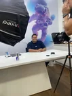
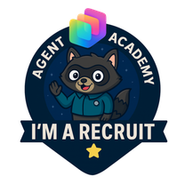
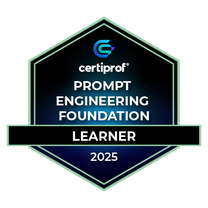
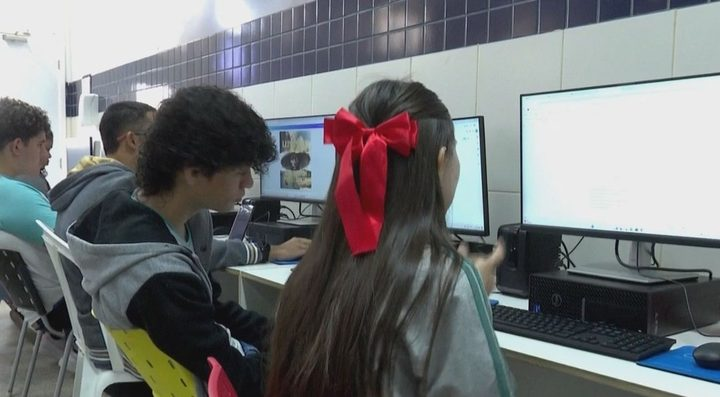
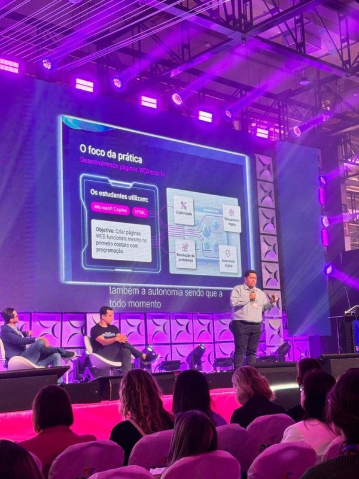
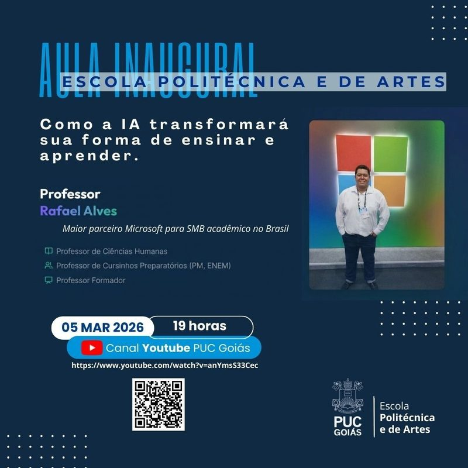
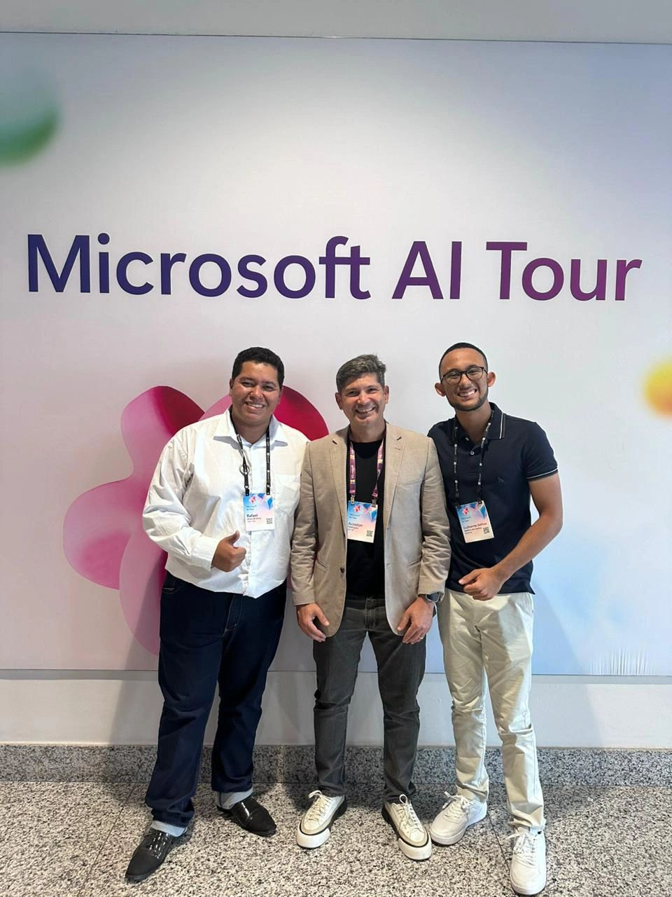
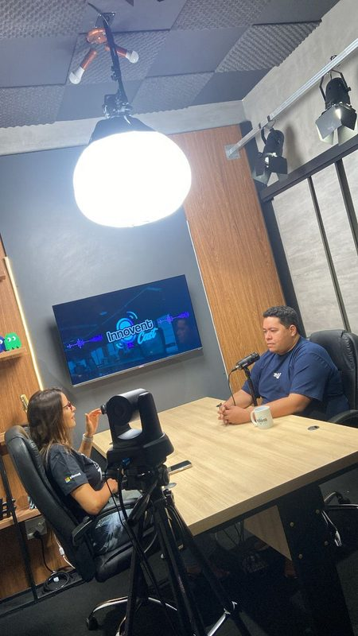
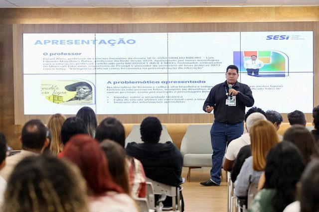

IA com Raízes Humanistas
Modelos generativos como catalisadores de investigação crítica e valorização da ancestralidade, história afro-brasileira e saberes tradicionais, combatendo ativamente o apagamento cultural.

Professor na Escola SESI João Ubaldo Ribeiro em Luís Eduardo Magalhães (BA) e Formador do SESI Nacional. Unindo pesquisa histórica, soberania pedagógica e tecnologias generativas de ponta.
A tecnologia deve ser aliada da emancipação do pensamento crítico, nunca um substituto da cognição. Conheça as bases do trabalho em sala de aula e formação de professores.
Modelos generativos como catalisadores de investigação crítica e valorização da ancestralidade, história afro-brasileira e saberes tradicionais, combatendo ativamente o apagamento cultural.
Instrução metodológica de docentes e alunos na criação de prompts socráticos, refinamento analítico, verificação de alucinações e contextualização regional do conhecimento.
Alinhamento absoluto à LGPD, com proteção integral de dados de menores, priorização de ferramentas locais e transparência quanto aos algoritmos utilizados no processo de ensino.
Da formação histórica no Oeste baiano aos palcos nacionais de inovação educacional.
Reconhecimento global para educadores pioneiros em inovação tecnológica. Atuação destacada em Copilot Studio, Microsoft Agent Academy e ecossistema Microsoft 365 para educação.
Capacitação e mentoria continuada para equipes pedagógicas de todo o Brasil, estabelecendo diretrizes para o uso ético da inteligência artificial generativa na educação básica e profissional.
Destaque estadual por práticas pedagógicas inovadoras que integraram inteligência artificial e ciências humanas nas salas de aula do Oeste baiano.
Concepção de iniciativas curriculares premiadas como o projeto IA Afro-Indígena, integrando rigor historiográfico, produção audiovisual e letramento digital crítico no coração do Cerrado.
Títulos emitidos por organizações globais de liderança em tecnologia e educação.


Práticas reais demonstrando o potencial transformador da tecnologia na sala de aula.

Iniciativa de repercussão nacional em que estudantes utilizam Microsoft Copilot para investigar patrimônio histórico, mitologias ancestrais e resistência dos povos tradicionais.
Ler matéria no G1
Conferência no maior palco de tecnologia educacional da América Latina, apresentando casos práticos de implementação de ferramentas generativas na educação básica.
Ver perfil no evento
Série de ensaios e artigos examinando os impactos de sistemas autônomos no ensino e a defesa da soberania do pensamento crítico frente ao automatismo digital.
Acessar ensaios no LinkedInApresentando ao ecossistema educacional brasileiro como a inteligência artificial generativa pode ser direcionada para fortalecer a pesquisa histórica e o protagonismo discente.
"A tecnologia deve ampliar a nossa capacidade de formular perguntas significativas sobre a humanidade, nunca terceirizar a reflexão."Página Oficial na Bett Brasil
Momentos marcantes em conferências, congressos e capacitações por todo o país.



Informações sobre como convidar o Professor Rafael para eventos, palestras ou consultoria pedagógica.
Canais diretos para convites acadêmicos, palestras magnas, formação docente e projetos curriculares.
Disponível para palestras magnas, oficinas de formação docente e projetos de inovação curricular.
Preencha os campos abaixo para iniciar uma conversa direta via WhatsApp com o professor.